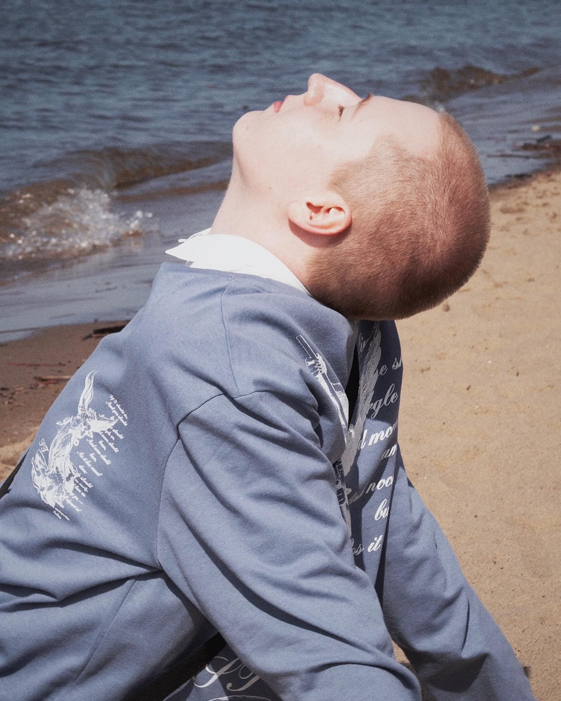
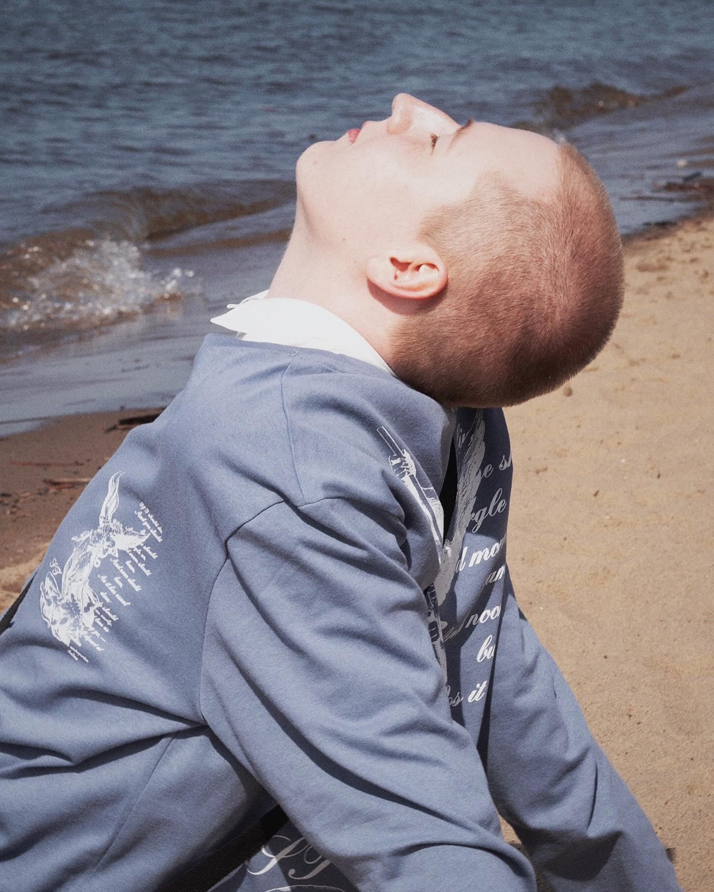

Привет,это моя уже почти вторая страница!
Вот немного информации обо мне:
Меня зовут Арслан, я родился в городе Чапаевск
Я закончил школу номер 3 почти с золотой медалью
Я дева по знаку зодиака и иерофант по нумерологии
Также люблю смотреть сериалы и читать книги!
Ну и планировал поступать на лингвиста
Какие фильмы мне нравятся:
- Gossip Girl (сериал, 2007-2012) - история о жизни и интригах элитных школьников Верхнего Ист-Сайда в Нью-Йорке.
- Mean Girls (фильм, 2004) - комедия о девушке, которая попадает в мир популярных и жестоких школьниц.
- Heathers (фильм, 1988) - черная комедия о борьбе за власть в школе.
- 90210 (сериал, 2008-2013) - продолжение истории известного сериала о богатых подростках из Беверли-Хиллз.
- The OC (сериал, 2003-2007) - драма о жизни подростков в элитном пригороде Калифорнии.
- Scream Queens (сериал, 2015-2016) - комедийный ужастик о соперничестве в студенческом сестринстве.
- Jawbreaker (фильм, 1999) - темная комедия о трех популярных девушках, случайно убивших свою лучшую подругу.
- Popular (сериал, 1999-2001) - история о двух девушках с разным социальным статусом, вынужденных дружить.
- Clueless (фильм, 1995) - комедия о богатой и популярной школьнице, помогающей своей новой однокласснице.
- The Devil Wears Prada (фильм, 2006) - драма об амбициозной девушке, попавшей на работу в модный журнал.
Какая музыка мне нравится:
- Nicki Minaj - американская рэперша, певица, автор песен и актриса.
- Cardi B - американская рэперша, певица и актриса.
- Megan Thee Stallion - американская рэперша.
- Doja Cat - американская рэп-певица и автор песен.
- Lizzo - американская певица, рэперша и флейтистка.
- Ariana Grande - американская певица, автор песен и актриса.
- Beyoncé - американская певица, автор песен, актриса и танцовщица.
- Katy Perry - американская певица, автор песен и телевизионная личность.
- Lady Gaga - американская певица, автор песен, актриса и бизнесвумен.
Способы связи со мной:
Это ссылочка на мой телеграмм!Это ссылочка на мой вконтакте!
 
